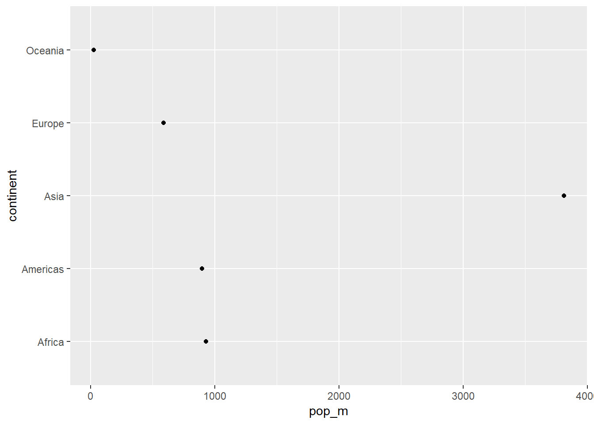

Chapter 8 Appendix
8.1 delete file,download file ect.
Open ebay.com with defalt chrome:
Delete a file with unlink or file.remove():
Check a folder existence:
Create a folder :
Delete a folder :
Download Files:
unzip file:
Play music
Shutdown Computer in 10 seconds:
Check internet speed:
Check run time:
sleep_for_a_minute <- function() { Sys.sleep(60) }
start_time <- Sys.time()
sleep_for_a_minute()
end_time <- Sys.time()
start_time
end_time
end_time - start_time8.1.1 apply family
8.1.1.1 apply()
apply to matrix
8.1.1.2 lapply()
The output returned is a list
8.1.1.3 sapply()
The sapply() function works like lapply(), but it tries to simplify the output to the most elementary data structure that is possible. And indeed, sapply() is a ‘wrapper’ function for lapply().
A=as.data.frame(matrix(1:9,nrow=3,ncol=3))
B=as.data.frame(matrix(11:19,nrow=3,ncol=3))
C=as.data.frame(matrix(101:109,nrow=3,ncol=3))
MyList <- list(A,B,C) # Put dataframe A B C to a list
sapply(MyList,"[", , 2) # Get each dataframs second col and put it into a matrix by col
sapply(MyList,"[", 1, ) # Get each dataframs first row and put it into a matrix by col8.1.1.4 mapply()
The mapply() function stands for ‘multivariate apply’. Its purpose is to be able to vectorize arguments to a function that is not usually accepting vectors as arguments.
8.2 ggvis
8.2.1 scatter plot
pop_m vs year scatter plot:from 1950 to 2007, world pop increased from 2B to 6B,Asia 1B to 4B
## Warning: package 'ggvis' was built under R version 3.5.2gapminder2=gapminder%>%group_by(year,continent)%>%summarise(pop_m=sum(pop/1000000,na.rm = TRUE))
gg= ggvis(gapminder2,~year, ~pop_m,fill = ~continent) %>% layer_points()
gg8.2.2 line plot
pop_m vs year line plot:from 1950 to 2007, world pop increased from 2B to 6B
library(gapminder)
library(dplyr)
library(ggplot2)
gapminder2=gapminder%>%group_by(year)%>%summarise(pop_m=sum(pop/1000000,na.rm = TRUE))
gg= ggvis(gapminder2,~year, ~pop_m) %>% layer_points()%>% layer_smooths()
ggAdd one more line with another variable
8.2.3 bar plot
pop_m vs continent bar plot:At 2007, Asia have most pop 3.8B
library(gapminder)
library(dplyr)
library(ggplot2)
gapminder2=gapminder%>%filter(year==2007)%>%group_by(continent)%>%summarise(pop_m=sum(pop/1000000,na.rm = TRUE))
gg=ggplot(gapminder2, aes(x = continent,y=pop_m)) +
geom_col()
gg
8.2.4 Dot plot
pop_m vs continent bar plot:At 2007, Asia have most pop 3.8B
library(gapminder)
library(dplyr)
library(ggplot2)
gapminder2=gapminder%>%filter(year==2007)%>%group_by(continent)%>%summarise(pop_m=sum(pop/1000000,na.rm = TRUE),pop_m_half=sum(pop/1000000,na.rm = TRUE)/2)
gg=ggplot(gapminder2, aes(x = pop_m, y = continent)) +
geom_point()
gg
8.2.5 histogram
pop_m histogram:At 2007, most of the countries under 500M pop,two countries over 1000M pop.
library(gapminder)
library(dplyr)
library(ggplot2)
gapminder2=gapminder%>%filter(year==2007)%>%mutate(pop_m=pop/1000000)
gg=ggplot(gapminder2, aes(x = pop_m)) +geom_histogram()
gg
8.2.6 Boxplot
pop_m Boxplot:At 2007, most of the countries under 500M pop,two countries over 1000M pop.
8.2.7 Other plot
Map
8.2.8 setting
8.3 Connect with Alation
library(devtools)
devtools::install_github(repo = "mattwg/alation")
library(alation)
#create token
getToken(user="magardner",password="secret", url="https://alation.corp.ebay.com")
#change new token
changeToken(user="magardner",password="newsecret", url="https://alation.corp.ebay.com")
# get sql
sql <- getQuery(123456)
# get data
df <- getResult(12345)8.4 pre-modeling
8.4.1 Sampling
8.4.1.1 Simple Random Sampling
8.4.1.2 Stratified Sampling
8.4.2 10 most common Distributions
- p for “probability”
- q for “quantile”
- d for “density”
8.4.2.1 Normal distribution:
Question: Suppose people weights are normally distributed with mean 70 KG and variance 25 KG. What is the probability that a randomly chosen people weighs more then 80 KG?
## [1] 0.02275013Question: Suppose IQ scores are normally distributed with mean 100 and standard deviation 15. What is the 95th percentile of the distribution of IQ scores?
## [1] 124.67288.4.2.2 binomial (including Bernoulli) distribution:
The binomial distribution is a discrete probability distribution. It describes the outcome of n independent trials in an experiment. Each trial is assumed to have only two outcomes, either success or failure.
Question: Suppose Shop XYZ product have probability 0.05 of being defective. Suppose product are shipped in cartons containing 25 product. What is the probability that a randomly chosen carton contains exactly one defective product?
## [1] 0.3649863Question: Suppose Shop XYZ product have probability 0.05 of being defective. Suppose product are shipped in cartons containing 25 product. What is the probability that a randomly chosen carton contains no more than one defective product(0 or 1 product)?
## [1] 0.64237598.4.2.3 chi-squared distribution:
Question:Find the 95th percentile of the Chi-Squared distribution with 7 degrees of freedom.
## [1] 14.067148.4.2.4 exponential distribution:
The exponential distribution describes the arrival time of a randomly recurring independent event sequence.
Question:Suppose the mean checkout time of a supermarket cashier is three minutes. Find the probability of a customer checkout being completed by the cashier in less than two minutes.
## [1] 0.48658298.4.2.5 F distribution:
Question:Find the 95th percentile of the F distribution with (5, 2) degrees of freedom.
## [1] 19.296418.4.2.6 Poisson distribution:
The Poisson distribution is the probability distribution of independent event occurrences in an interval.
Question:If there are 12 cars crossing a bridge per minute on average, find the probability of having 17 or more cars crossing the bridge in a particular minute.
## [1] 0.1012918.4.2.7 Student’s t distribution:
Question:Find the 97th percentiles of the Student t distribution with 5 degrees of freedom.
## [1] 2.4215858.4.2.8 Uniform distribution:
The uniform distribution is the probability distribution of random number selection from between a and b.
Question:Select 5 random numbers between one and three.
## [1] 1.091797 1.695506 1.112618 2.873735 1.2004298.4.2.9 gamma distribution
8.4.2.10 geometric distribution
8.4.3 statistical test
8.4.3.1 Correlational test
Pearson correlation: Tests for the strength of the association between two continuous variables
Spearman correlation: Tests for the strength of the association between two ordinal variables (does not rely on the assumption of normally distributed data)
8.4.3.2 chi square test
Tests for the strength of the association between two categorical variables
8.4.3.3 One sample T test
all T test also call Student’s t-test.William Sealy Gosset, who developed the “t-statistic” and published it under the pseudonym of “Student” in 1908
8.4.3.4 Two sample T test
8.4.3.5 Paired T-test
Tests for the difference between two related variables
8.4.3.6 Independent T-test
Tests for the difference between two independent variables
8.4.3.7 ANOVA
Tests the difference between group means after any other variance in the outcome variable is accounted for